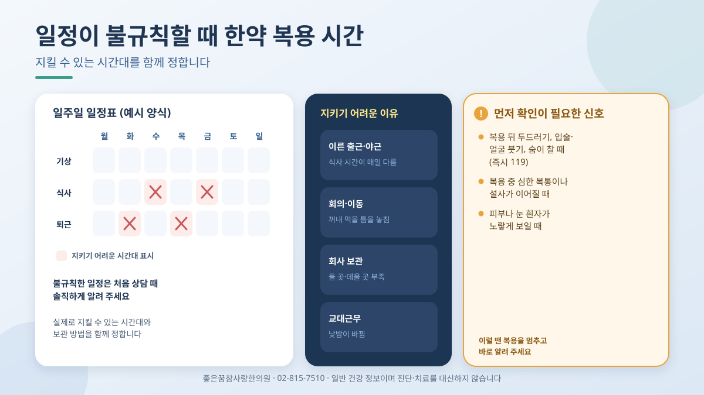

이종호 한의사 감수좋은꿈참사랑한의원 대표원장 (한의사 면허번호 19769)발행 2026-11-23 · 수정 2026-11-26
이 글의 차례
- 왜 복용 시간을 지키기 어려울까요
- 자주 하는 오해
- 예를 들면 이런 경우입니다
- 몸에 맞춰 지은 약도 드실 수 있는 시간이어야 합니다
- 복용 시간보다 먼저 살펴볼 것은 무엇일까요?
- 일정이 이런 모양이라면 이렇게 상의해 보세요
- 먼저 이렇게 여쭙니다
- 스스로 점검해 보세요
- 방문 전에 먼저 해 볼 수 있는 것
- 한의원에서 함께 살필 수 있는 경우
- 언제 다시 상의하면 좋을까요
- 이렇게 기록해 오시면 상담이 쉬워집니다
- 상담 때 이렇게 말씀해 주시면 정하기 쉽습니다
- 놓치지 않도록 돕는 생활 요령
- 가족과 함께 지내신다면
- 일주일 복용표, 이렇게 만들어 보세요
- 바쁜 분과 다시 만날 때 나누는 이야기
- 원내에서 달인 한약은 어떻게 받나요?
- 복용을 놓쳤을 때 하지 않으셨으면 하는 것
- 다른 약을 함께 드신다면
- 이런 증상은 먼저 확인이 필요합니다
- 함께 읽으면 좋은 글
한약은 진단과 상담을 거친 뒤 처방되고, 먹는 방법과 시간도 함께 안내받습니다. 하루 일정이 불규칙하다면 처음 상담할 때 솔직하게 알려 주셔야 실제로 지킬 수 있는 방법으로 맞출 수 있습니다.
왜 복용 시간을 지키기 어려울까요
- 출근이 이르거나 야근이 잦으면 식사 시간이 매일 달라집니다.
- 회의와 이동이 많으면 약을 꺼내 먹을 틈을 놓치기 쉽습니다.
- 회사에 보관하거나 데울 곳이 마땅치 않은 경우가 있습니다.
- 교대근무라면 낮과 밤이 바뀌어 기준 시간이 흔들립니다.
자주 하는 오해
- 정해진 시간을 못 지킬 바에야 한약 상담을 미루는 게 좋겠다고 여기기 쉽지만, 일정이 불규칙하다는 사실 자체가 상담에서 함께 다룰 중요한 정보입니다.
- 놓친 약을 다음 번에 두 봉 한꺼번에 먹으면 된다고 생각하기 쉽지만, 복용량과 횟수는 임의로 바꾸지 말고 한의원에 먼저 문의해 주세요.
- 바쁜 생활은 약과 상관없다고 여기기 쉽지만, 끼니를 거르고 잠이 줄어드는 생활 리듬은 몸 상태를 살필 때 함께 보는 부분입니다.
- 한의사에게 일정이 엉망이라고 말하기 민망하다는 분이 많지만, 있는 그대로 알려 주셔야 현실적인 시간대를 정할 수 있습니다.
예를 들면 이런 경우입니다
- 예를 들어 아침 일찍 출근해 오전 회의가 이어지는 직장인이라면, 회의 전후 비는 시간과 점심 시간을 기준으로 복용 시간대를 함께 정해 볼 수 있습니다.
- 예를 들어 학원 일정 때문에 저녁 식사가 늦어지는 수험생이라면, 학교와 학원 사이 이동 시간과 잠드는 시간을 함께 여쭙습니다.
- 예를 들어 아이를 돌보느라 자기 끼니를 자주 거르는 육아 중인 분이라면, 수유 중인지와 함께 아이 일정에 맞춰 실제로 숨을 돌리는 시간이 언제인지부터 확인합니다.
몸에 맞춰 지은 약도 드실 수 있는 시간이어야 합니다
한약은 같은 증상이라도 맥에 따라 처방의 방향과 세기가 달라집니다. 저는 진맥까지 보고 맞춰 드리면 억지로 참고 드실 일이 줄어든다고 말씀드려 왔습니다.
그런데 아무리 몸을 보고 지은 약이라도 드시기 어려운 시간에 정해 두면 지키기 힘듭니다. 그래서 처방만큼이나 그 약이 놓일 하루의 자리를 함께 찾는 데 시간을 씁니다.
복용 시간보다 먼저 살펴볼 것은 무엇일까요?
바쁜 분과 복용 시간을 정할 때는 시계보다 하루의 고정된 지점을 먼저 찾습니다. 아무리 일정이 들쭉날쭉해도 일어나는 순간, 집을 나서는 순간, 잠자리에 드는 순간처럼 매일 꼭 지나가는 때가 있기 때문입니다.
약을 그런 순간에 묶어 두면 몇 시인지와 상관없이 기억하기 쉬워집니다. 구체적인 복용 시점은 처방과 몸 상태에 따라 달라지니, 그 안에서 실제로 지킬 수 있는 지점을 함께 고릅니다.
일정이 이런 모양이라면 이렇게 상의해 보세요
- 교대근무를 하신다면 주간·야간 근무표를 함께 보여 주세요. 근무가 바뀌는 날 어떻게 할지를 미리 정해 두면 헷갈림이 줄어듭니다.
- 회식이나 술자리가 잦다면 일주일에 몇 번쯤인지 솔직하게 알려 주세요. 술은 한약을 드시는 기간에는 가능한 한 줄여 주시기를 권하고, 피하기 어려운 자리가 있는 주에는 지킬 점을 상담 때 함께 정합니다.
- 출장이 잦다면 다음 출장 일정을 미리 알려 주시면 보관과 휴대 방법까지 같이 이야기할 수 있습니다.
- 수유 중이거나 임신 가능성이 있다면 상담을 시작할 때 꼭 먼저 말씀해 주세요. 임신 중이라면 산부인과와도 상의하셔야 합니다.
먼저 이렇게 여쭙니다
- 평일과 주말의 기상·출근·퇴근 시간은 어떻게 되나요?
- 거르는 끼니가 있나요?
- 약을 먹기 어려운 시간대는 언제인가요?
- 복용 중인 다른 약이나 영양제가 있나요?
- 커피나 술을 마시는 시간과 양은 어느 정도인가요?
- 잠드는 시간이 들쭉날쭉하거나 자다가 깨는 날이 있나요?
스스로 점검해 보세요
상담 전에 아래 항목을 확인해 보세요.
- 평일과 주말의 기상·식사·잠드는 시간을 대략 말할 수 있다
- 하루 중 약을 먹기 가장 어려운 시간대를 알고 있다
- 일주일에 거르는 끼니가 몇 번인지 알고 있다
- 회사나 학교에 약을 둘 곳이 있는지 확인했다
- 복용 중인 다른 약과 영양제 이름을 적어 두었다
- 다가오는 출장이나 야간 근무 일정이 있는지 확인했다
해당 항목은 상담 때 그대로 말씀해 주시면 복용 시간을 정하는 데 쓰입니다.
방문 전에 먼저 해 볼 수 있는 것
- 일주일 일정표를 간단히 적어 가기(기상, 식사, 퇴근)
- 회사에 약을 둘 곳이 있는지 확인하기
- 지키기 어려운 시간대를 미리 표시하기
- 휴대폰 알림을 쓸 수 있는 시간대인지 미리 생각해 두기
- 복용 중인 약과 영양제 이름 적기
한의원에서 함께 살필 수 있는 경우
- 식사 시간이 불규칙해 속이 불편할 때 식사 패턴과 함께 복용 시간을 살핍니다.
- 출근이 이르거나 늦어 하루 일정이 자주 바뀔 때 현실적인 시간대를 함께 정합니다.
- 약을 보관하거나 데울 장소가 마땅치 않을 때 보관 방법을 함께 묻습니다.
좋은꿈참사랑한의원에서는 진찰과 상담을 거친 뒤 한약을 처방하고, 원내에서 달인 약을 드릴 때 먹는 방법과 보관법을 함께 안내합니다. 일정이 불규칙하다면 실제로 지킬 수 있는 시간대를 함께 정하고, 복용 중 불편한 반응이 있으면 복용을 멈추고 연락하시도록 알려 드립니다.
첫 방문에는 모든 분의 맥을 먼저 짚고, 그동안 불편한 곳과 하루 일정을 여쭙습니다. 필요하다고 판단되면 인바디 770 같은 장비로 몸 상태를 확인하고, 적어 오신 일정표와 식사·잠 기록을 함께 보며 한약이 맞는지, 맞다면 언제 어떻게 드실지를 설명해 드립니다.
언제 다시 상의하면 좋을까요
- 정한 시간대에 일주일 가운데 여러 번 복용을 놓친다면, 다음 방문을 기다리지 말고 전화로 상의해 주세요.
- 출장, 야간 근무, 시험 기간처럼 일정이 크게 바뀌기 전에는 미리 알려 주시면 보관과 휴대 방법을 함께 정할 수 있습니다.
- 복용 뒤 속이 불편하거나 변 상태가 달라졌다면 복용을 멈추고 한의원에 연락해 주세요.
이렇게 기록해 오시면 상담이 쉬워집니다
- 복용을 놓친 날과 그 이유
- 복용 뒤 속 불편, 변 상태 변화 같은 반응
- 복용 중인 다른 약의 이름과 먹는 시간
- 실제로 약을 먹은 시각을 일주일 정도 적은 메모(휴대폰 알림 기록도 괜찮습니다)
- 복용 기간 동안 잠드는 시간과 아침에 일어날 때 느낌이 달라졌는지
상담 때 이렇게 말씀해 주시면 정하기 쉽습니다
하루 일정을 설명하기 막막하다면 아래처럼 한 문단으로 말씀해 주셔도 충분합니다.
"평일은 6시 반에 일어나 아침은 거의 거르고, 점심은 12시에서 1시 사이에 먹지만 회의가 있으면 2시가 넘어요. 저녁은 8시 이후에 먹고, 일주일에 두 번쯤 회식이 있습니다. 회사에는 냉장고가 있어요."
이 정도만 들어도 지킬 수 있는 지점과 어려운 지점이 보입니다. 거르는 끼니나 늦은 식사를 감추지 않으셔도 됩니다. 있는 그대로가 가장 쓸모 있는 정보입니다.
놓치지 않도록 돕는 생활 요령
- 아침 복용이라면 칫솔 옆이나 현관 신발장처럼 매일 지나가는 자리에 작은 메모를 붙여 두는 방법이 있습니다.
- 휴대폰 알림은 시각보다 '점심 먹고 자리로 돌아오면'처럼 상황 이름으로 저장하면 눈에 더 잘 들어옵니다.
- 외출이 긴 날은 가방 안쪽 주머니에 한 포를 넣어 두세요. 보관 온도와 기간은 안내받은 방법을 따릅니다.
- 먹은 뒤에는 달력이나 휴대폰에 체크해 두면, 먹었는지 헷갈려 두 번 먹는 일을 막을 수 있습니다.
- 주말에는 늦잠으로 아침이 밀리기 쉬우니, 주말용 시점을 따로 정해 두는 것도 방법입니다.
가족과 함께 지내신다면
가족과 함께 사신다면 복용 지점을 가족에게도 알려 두세요. 아침 식탁에서 "약 먹었어?" 하고 한마디 건네주는 것만으로도 놓치는 날을 줄이는 데 보탬이 됩니다. 혼자 사신다면 휴대폰 알림과 눈에 보이는 메모를 함께 쓰시면 좋습니다.
일주일 복용표, 이렇게 만들어 보세요
종이나 휴대폰 메모에 월요일부터 일요일까지 일곱 칸을 만들고, 각 칸을 복용 횟수만큼 나눕니다. 먹은 칸에는 동그라미, 놓친 칸에는 엑스를 표시하고 옆에 짧게 이유를 적어 주세요.
이유는 '회의', '외근', '늦잠', '회식'처럼 한 단어면 충분합니다. 일주일이 지나 표를 보면 놓친 이유가 한두 가지로 모이는 경우가 많습니다. 그 이유를 알면 다음 상담에서 복용 지점을 어디로 옮길지 훨씬 쉽게 정할 수 있습니다.
속이 편한지, 변 상태가 어떤지, 잠이 어떤지도 칸 옆에 한 단어씩 적어 오세요. 놓친 횟수를 부끄러워하실 필요는 없습니다. 그 기록이 있어야 생활에 더 맞는 방법을 함께 찾을 수 있습니다.
바쁜 분과 다시 만날 때 나누는 이야기
약을 지어 드린 뒤에 제가 가장 먼저 듣고 싶은 것은 챙겨 드실 만했는지, 드신 뒤 속은 어땠는지입니다. 제가 좋겠다고 생각해서 드린 약이 그분의 하루에서는 어땠는지, 그 대답은 다시 만나야 들을 수 있습니다.
다시 오실 때마다 맥을 다시 짚고, 그사이 잠과 소화, 배변이 어땠는지 이어서 확인합니다. 복용표에서 자주 놓친 시간대가 보이면 그 시간을 억지로 지키기보다 다른 지점으로 옮기는 방법을 함께 고민합니다. 일정이 바쁜 것은 탓할 일이 아니라 함께 맞춰 갈 조건이라고 생각합니다.
원내에서 달인 한약은 어떻게 받나요?
한약은 원내에서 달여 준비합니다. 받으실 때 듣는 먹는 방법과 보관법은 바쁜 분일수록 그 자리에서 휴대폰에 적어 두세요.
출장이나 야근이 몰린 주와 겹친다면 처방을 정할 때 미리 말씀해 주세요. 언제 받으실 수 있는지는 방문 전 전화로 확인해 주세요.
복용을 놓쳤을 때 하지 않으셨으면 하는 것
놓친 날이 많다고 말없이 복용을 그만두거나, 놓친 사실을 다음 진료 때 감추지는 않으셨으면 합니다. 놓친 날은 누구에게나 생깁니다.
그 자체보다 왜 놓쳤는지를 함께 보면 더 지키기 쉬운 지점을 찾을 수 있습니다. 어떻게 할지 헷갈리면 한의원에 전화로 여쭤 주세요.
다른 약을 함께 드신다면
병원에서 처방받은 약을 드시는 중이라면 이름과 먹는 시간을 모두 알려 주세요. 한약은 지금 드시는 약을 확인한 뒤에 정하며, 한약 시간에 맞추려고 처방받은 약을 거르거나 임의로 끊거나 줄이지 않으셔야 합니다.
약 사이 간격을 어떻게 둘지도 상담 때 함께 정합니다. 영양제나 건강식품도 빠뜨리지 말고 적어 오세요. 약 봉투나 영양제 통을 사진으로 찍어 오시면 이름을 옮겨 적는 수고를 덜 수 있습니다.
하루를 쪼개 쓰는 분에게 약 먹을 틈까지 챙기는 일은 생각보다 큰 수고입니다. 놓친 날이 있어도 괜찮습니다. 다음에 오시면 지난 한 주 동안 어느 시간대에 가장 자주 놓치셨는지부터 여쭙겠습니다.
이런 증상은 먼저 확인이 필요합니다
- 복용 뒤 두드러기, 입술이나 얼굴 붓기, 숨이 찬 경우(즉시 가까운 응급실)
- 복용 중 심한 복통이나 설사가 이어지는 경우
이런 신호가 있으면 한의원보다 가까운 병원이나 응급실을 먼저 찾으세요.
함께 읽으면 좋은 글

여쭙는 것
- 평일과 주말의 기상·출근·퇴근 시간은 어떻게 되나요?
- 거르는 끼니가 있나요?
- 약을 먹기 어려운 시간대는 언제인가요?
한의원에서 함께 살필 것
- 식사 시간이 불규칙해 속이 불편할 때 식사 패턴과 함께 복용 시간을 살핍니다.
- 출근이 이르거나 늦어 하루 일정이 자주 바뀔 때 현실적인 시간대를 함께 정합니다.
- 약을 보관하거나 데울 장소가 마땅치 않을 때 보관 방법을 함께 묻습니다.
먼저 확인이 필요한 신호
- 복용 뒤 두드러기, 입술이나 얼굴 붓기, 숨이 찬 경우(즉시 가까운 응급실)
- 복용 중 심한 복통이나 설사가 이어지는 경우
한눈에 보는 표
| 구분 | 핵심 |
|---|---|
| 여쭙는 것 | 평일과 주말의 기상·출근·퇴근 시간은 어떻게 되나요? 거르는 끼니가 있나요? |
| 한의원에서 함께 살필 것 | 식사 시간이 불규칙해 속이 불편할 때 식사 패턴과 함께 복용 시간을 살핍니다. 출근이 이르거나 늦어 하루 일정이 자주 바뀔 때 현실적인 시간대를 함께 정합니다. |
| 먼저 확인이 필요한 신호 | 복용 뒤 두드러기, 입술이나 얼굴 붓기, 숨이 찬 경우(즉시 가까운 응급실) 복용 중 심한 복통이나 설사가 이어지는 경우 |
자주 묻는 질문
하루 먹는 횟수를 제가 줄여도 되나요?
임의로 바꾸지 말고 한의원과 먼저 상의해 주세요.
한 번 건너뛰었을 때는 어떻게 하나요?
상황에 따라 안내가 다르므로 한의원에 문의해 보시기 바랍니다.
출장 중에는 어떻게 가져가나요?
보관과 휴대 방법을 미리 문의해 두면 편합니다.
퇴근 뒤에도 상담받을 수 있나요?
평일은 09:30~20:00(점심 13:00~14:00), 토·일·공휴일은 09:30~15:00에 진료합니다. 방문 전 전화(02-815-7510)로 확인해 주세요.
좋은꿈참사랑한의원은 재진 때 지난번 이야기부터 이어서 여쭙니다. 진료시간과 예약은 오시는 길에서 확인하세요.
어디서 상담받을 수 있나요?
좋은꿈참사랑한의원은 서울 동작구 만양로2길 2 신성빌딩 3층·5층(서울 동작구 상도동, 7호선 상도역 3번 출구 근처)에 있습니다. 한의사 3명(이종호 대표원장, 조영기 수석진료원장, 정원영 진료원장)이 진료합니다. 진료시간은 평일 09:30~20:00(점심 13:00~14:00), 토·일·공휴일 09:30~15:00이며, 방문 전 전화로 확인을 권합니다. 예약은 네이버 예약, 카카오톡 상담, 전화 02-815-7510로 받습니다.
이 글은 일반적인 건강 정보이며 개인의 진단이나 치료를 대신하지 않습니다. 증상이 있거나 복용 중인 약이 있다면 진료를 통해 확인하세요. 치료 효과는 개인마다 다를 수 있습니다.
작성 기준: 일반적으로 알려져 있는 건강 정보를 참고해 정리했습니다(대표원장 감수). 증상 기록은 1~2주 동안 하루 1회, 비슷한 시간에 적어 오시면 지난 상태와 비교하기 쉽습니다.